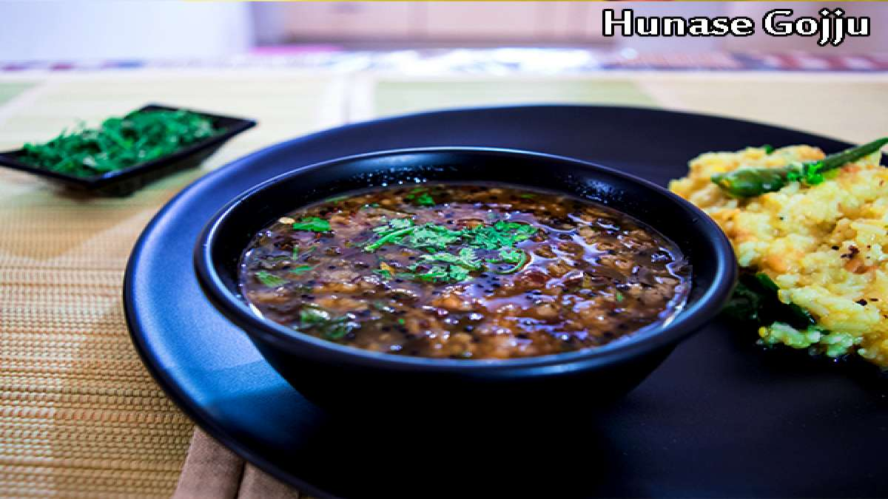

<!DOCTYPE html>
<html>
    <title>andhrapradesh</title>
    <link rel="stylesheet" type="text/css" href="andhrapradesh.css">
</html>
<body>
    
    <marquee><BIG>ANNOUNCEMENT:IF U HAVE ANY QUERIES,DOUGHTS OR ANY OTHER INFORMATION ,OR BETTER IDEAS TO DEVOLOP THE WEBSITE CLICK ON CONTACT US IN HOME PAGE</BIG></marquee>
    <div class="divs">
            <h1 >THE TASTE OF KARNATAKA &#128523</h1>
            
            <div class="os">
            <ul>
				<li ><a href="http://127.0.0.1:5500/andhrapradesh.html">ANDHRA PRADESH</a></li>
				<li ><a href="http://127.0.0.1:5500/tamilanadu.html">TAMILANADU</a></li>
				<li class="active"><a href="http://127.0.0.1:5500/karnataka.html">KARNATAKA</a></li>
				<li><a href="http://127.0.0.1:5500/telangana.html">TELANGANA</a></li>				
				<li><a href="http://127.0.0.1:5500/kerala.html">KERALA</a></li>
                <li><a href="http://127.0.0.1:5500/puduchhery.html">PUDUCHHERY</a></li>
                <li id="back"><a href="http://127.0.0.1:5500/html.html">BACK &#9166</a></li>
			</ul></div>
    </div class="head" >
    <style>
        body {
          font-family: Arial, sans-serif;
          margin: 0;
          padding: 0;
        }
    
        header {
          background-color: #F44336;
          color: #FFF;
          padding: 20px;
          text-align: center;
        }
    
        h1 {
          margin: 0;
          font-size: 36px;
        }
    
        .food-card {
          background-color: #FFF;
          border-radius: 5px;
          box-shadow: 0 2px 4px rgba(0, 0, 0, 0.1);
          margin: 20px;
          padding: 20px;
        }
    
        .food-card h2 {
          font-size: 24px;
          margin-top: 0;
        }
    
        .food-card p {
          margin-bottom: 10px;
        }
        .a{
            height: 400px;
            border: none;
            border-radius: 50px;
        }
      </style>
    </head>
    <body>
      <header>
        <h1>Famous Foods in Karnataka</h1>
      </header>
    
      <div class="food-card">
        
        <h2 id="che">Tatte Idli</h2>
        <br><br><br<br>
        <p>
          Thatte Idli is a popular variant of Idli (rice cake). While regular idli is smaller and thinner, This idli is larger in circumference as well as thickness and gets its name from the circular disc type bowl in which it is made. It is better known as Bidadi (Ramanagara district, between Mysuru and Bengaluru express highway), Thàtte Idli as it originated in Bidadi town.

How Thatte Idli is made

Idli rice and urad dal are soaked in water for several hours. Once they get soft, the rice and dal is ground till they form a smooth batter. Idli batter is left overnight to ferment. Fermented batter almost doubles in volume with lots of air bubbles. Next day, salt is added and batter is spread on special purpose plates- the size of Thàtte Idli and steam cooked for 15-20 minutes in moderate flames. Now, thàtte idli is ready to be served.<br><br>

One single Thàtte idli equals 2-3 regular size idlis in terms of volume. Hence though a plate of Thàtte idli costs more than normal idli, This idli is very fulfilling.

Served with: The Idli is served with coconut chutney and sambar. A cup of filter coffee is also a great companion while enjoying Idli.

Where to find Thatte Idli:

Brahmin’s Thàtte Idli restaurants are a popular spot in Bengaluru to have the Idli. Thatte idli is sold in various quick service restaurants around the state including restaurants located on the state highways between Bengaluru and Mysuru. This idli is usually available during breakfast hours and evening hours.


        </p>
        
      </div>
    
      <div class="food-card">
        <h2>Neer Dosa</h2><br><br><br>
        <br><br<br>
        <p>
          Neer dosa are is a popular dosa variant from the Indian state of Karnataka.<br><br>
           “Neer” means “water” in the Tulu language, meaning this dish is literally known as “water dosa.” They are so named because the batter is quite thin and watery, unlike the usual thick dosa batter.
          One of my aunts – who is from the Bunt community in Mangalore – introduced me to this lovely breakfast specialty. I make them often because they are easy to prepare and don’t require any fermentation (or much forethought).

These lacy dosa pair well with coconut chutney for a delicious breakfast, or can be added to your tiffin box for a nice addition to your packed lunch.<br><br>Since they are so light, you can easily devour 5 to 6 of them in one sitting, so make sure you plan accordingly when making the batter.

Neer dosa are easy to prepare as fermentation is not required. You just need to soak the rice for about 4 to 5 hours and then grind it. If you want to eat the neer dosa first thing, you have to soak the rice overnight.
If you’re in a real rush, you can also swap in rice flour to cut back on soaking time. Rice flour requires just a 30 minute soak in water prior to making the batter. I sometimes use this tip when we wake up extra hungry and have cravings for neer dosa. <br><br>Once the batter is ready, you can start making the crepes and eat them hot from the pan.

Apart from coconut chutney, neer dosa can also be served with Veg Sagu, Vegetable Kurma or Potato Kurma. For kids, it is commonplace to serve this dosa with coconut milk or milk sweetened with some jaggery.
          </p>
        
      </div>
    
      <div class="food-card">
        <h2>Mangolorean Biryani</h2><br><br>
        <br><br>
        <p>
          This show on Hotstar “Raja, Rasoi, Aur Anya Kahaniyaan” has won my heart. They take you through the history of food prepared in the royal kitchens of India and the history behind them. I am a food lover and learning the new recipes from different regions and then trying them out is something that I enjoy. ❤  I came across so many dishes that are now on my “must try dishes” list 😀 After trying several dishes from my “must try dishes” list I decided to try Beary Biryani. <br><br>Biryani is one such dish that we both enjoys and I don’t want to try all kinds of Biryani. 😀

          This Biryani was made by merchants and traders using lots of green chilies and coconut while cooking Biryani. Rest of the preparation is same as we do for Dum Biryani. Rice and chicken are cooked separately and then it is layered and dum for hours. Over the time, the recipe has changed and customized according to one’s taste and preference. There are many recipes for Beary Muslim Biryani you will find on the internet. Do feel free to adjust the heat by increasing or decreasing the number of green chilies.

          </p>
      </div>
      
    
      <div class="food-card">
        <h2>Korri Gassi</h2><br><br>
        
        <br><br>
        <p>
          Hailing from the Bunt community in Mangalore this recipe is an absolute keeper! The gravy has loads of depth and flavour. A rich fiery red curry cooked with chicken although can be made with prawns or even with vegetables. Mangalorean cooking is hugely synonymous with vegetarian and coastal flavours.

I ate a traditional version of this dish for the first time at a wedding 12 years ago. It was served with a rice based roti. Dipping pieces of the roti in this luscious curry was probably what keeps me hooked to continue cooking this dish, just so I can replicate those delicious flavours.<br><br>

Kori Ghassi is a Mangalorean chicken curry made with roasted chillies, spices and creamy coconut milk. Traditionally byadgi chillies are used in the recipe a variety common to the region of Karnataka although I have swapped them for Kashmiri dried chillies as they are readily available. The colour and thickness of the curry is usually based on the variety of chilli used.

In this recipe I always fry the chillies with the spices until they go a dark red colour. This adds flavour and smokiness to the resultant ghassi. I have used a little more tamarind paste for the recipe than I normally would this is based on the strength of the tamarind so increase or decrease it accordingly.
        </p>
      </div>
    
      <div class="food-card">
        <h2>Haalbai</h2><br><br>
        
        <p>
          Haalbai<br><br>
Haalbai is a unique sweet from Karnataka. Haalbai is a sweet cake derived from fat grained rice used to make idli/dosa. Haalbai is made in several households as a festival sweet or to celebrate special events.<br>

How is Haalbai made:<br><br>

Idli/dosa rice is soaked for a few hours to soften, then ground thoroughly to get batter. This rice batter is mixed with coconut milk and then added to a hot pan containing ghee and jaggery. Upon heating the batter mix thickens to form a cake. Add-ons like cardamom, elaichi may be added at this stage. Additional ghee or coconut milk added as felt necessary. Once heating is complete, the mixture is transferred to a larger plate, spread evenly and cut into cubes for serving. A piece of cashew or almond may be inserted on top of haalbai for visual effect and added taste.

Since jaggery used in Haalbai is made from natural sugars, Haalbai is safe for consumption by even those who have high sugar levels.<br>

Where to get Haalbai:<br><br>

Haalbai has a relatively shorter shelf life because of the usage of coconut milk. Hence it may not be stocked in restaurants or bakeries and is often made to order. You may take help from your local host to help locate a store where Haalbai may be available or made to order.
        </p>
      </div>
      <div class="food-card">
        <h2>Udipi Samabar</h2><br><br>
        <br>
        <p>
          It is a fact that the South Indian combination of sambar-rice is one of the most comforting meals that can ever be. And why wouldn’t it be? It is a close relative of the quintessential ‘dal-rice or dal-chawal’ combo that is famous world over. So, here’s the Udupi Sambar recipe – a personal favorite from the world of sambars. This Udupi Sambar is spiced, slightly sweet, tangy, and made with pigeon pea lentils, tamarind, spices, herbs and mixed veggies
          The vegetables that I have added in this Udupi Sambar are carrot, drumsticks, brinjal (aubergine) and bottle gourd (lauki). You can use any other veggie that usually goes well in a sambar. Adding these only improves the nutrition quotient of the sambar and makes it filling too.<br><br>

          Generally, Udupi cuisine does not use any onion or garlic as well. However, I have used some pearl onions (sambar onions) in this Udupi Sambar. You can completely skip these.
          
          This Udupi Sambar recipe is easy to make and can be served with steamed rice, Idli, Dosa or a Mysore Masala Dosa.
        </p>
      </div>
      <div class="food-card">
        <h2>Gojju</h2><br><br>
        <br><br>
        <p>
          Tomato Gojju from Karnataka is a delectable sour, spicy and sweet curry best had with steamed rice. Get the recipe for this special tomato gojju in the post below.<br><br>
          A few weeks ago, I had a big harvest of cherry tomatoes. Somehow, I cannot eat cherry tomatoes raw. Something about the seeds or skins makes me develop a mild allergic reaction, with an itchy throat etc. So I was looking for ways to put them to use, other than eating them in salads or sundried tomatoes. As usual, Twitter threw up a variety of suggestions.

 
        </p>
      </div>
      <div class="food-card">
        <h2>Coorg pandi curry</h2><br><br>
        
        <br><br>
        <p>
          Pandi Curry is pretty famous in Mangalore as our town is also home to plenty of Kodavas (native people of Kodagu) who usually come to Mangalore for their education. While we didn’t have easy access to the recipe a few years ago, today if you wish to make it, many stores sell ready spice blends that help you make this dish in a jiffy. All you need is good quality pork with fat as fat is what helps lend this dish its amazing flavour along with the rich flavour of the spices. Kachampuli if not available can be substituted with thick tamarind juice or limes although the outcome of the final dish will greatly vary. Sadly some ingredients just don’t have a suitable substitute.<br><br>
          My man tried this dish with locally available Pork last month and not being completely satisfied with the result lugged more than 5kg of pork all the way from Mangalore last week during our super short X’mas visit there. This time around the preparation was simply stunning that it got over in no time. I just about managed to save a small bowl for the sake of the pictures.
        </p>
      </div>
    
      <div class="food-card">
        <h2>Punugulu</h2><br><br>
        

        <br><br>
        <p>
          More a technique than a recipe, Ragi Mudde are healthy balls made from finger millet flour and water. They are a delicacy and a staple food mainly in Karnataka and in some parts of Tamil Nadu and Andhra Pradesh. These delicious and nutritious balls could be considered the original “protein bites,” intended to keep farmers and working folks full during the day.
          Ragi Mudde or Ragi Balls is a staple meals item in Central Karnataka districts. Ragi Mudde is nutritious, fulfilling and unique in the way it is consumed (swallowed instead of chewing).<br><br>

How is Ragi Mudde made:<br><br>

Ragi Muddë is made from Ragi (Finger Millet) flour and water. Ragi flour and water are mixed and heated on a burner. As water evaporates a fine paste is formed, consistency of which is ensured by regular stirring with a stick. The hot dough of Ragi flour and water is allowed to cool down a bit, given the shape and size of a tennis ball and served hot.<br><br>

Served with: Ragi Muddë is bland in taste. Hence Ragi Ball is served with spicy rasam (known as Saaru or bassaru in Kannada, made from lentil & vegetable stews). Consumers take out a small portion of ragi muddë, dip it thoroughly in rasam and then swallow it without chewing for maximum impact. Sambar or curd are also used as accompaniments for Ragi Muddë.<br><br>

Where to find Ragi Muddë:<br><br>

Ragi Muddë is a common item in restaurants of Hasana and Chikmagalur districts. Ragi Muddë is also served in select restaurants across Karnataka. Use food delivery apps to identify nearest restaurants that serve Ragi Muddë.


        </p>
      </div>
    <br><br><br><br><br>
      <footer>
        <div class="container">
          <div class="footer-content">
            <div class="logo">
              
            </div>
            <div class="navigation">
              <ul>
                <li><a href="#">Home</a></li>
                <li><a href="#">Recipes</a></li>
                <li><a href="#">Restaurants</a></li>
                <li><a href="#">About Us</a></li>
                <li><a href="#">Contact</a></li>
              </ul>
            </div>
            <div class="social-media">
              <a href="#"><i class="fab fa-facebook"></i></a>
              <a href="#"><i class="fab fa-instagram"></i></a>
              <a href="#"><i class="fab fa-twitter"></i></a>
            </div>
          </div>
          <div class="footer-info">
            <p>&copy; 2023 Food Website. All rights reserved. | Designed by Your Name</p>
          </div>
        </div>
      </footer>
      
    </body>
    </html>
   
</body>
</html>